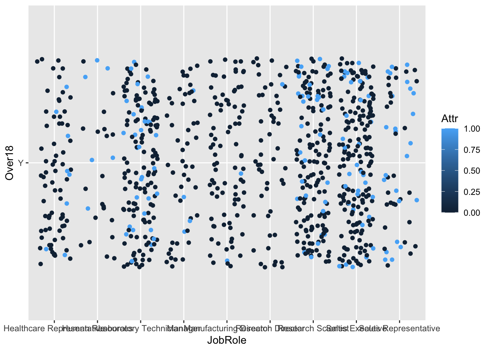
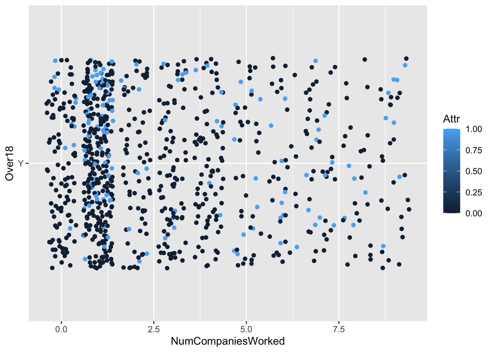
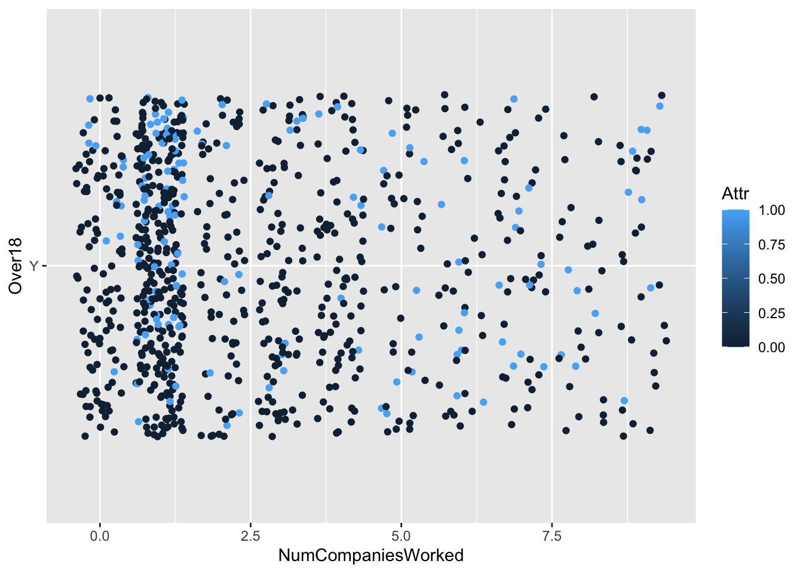
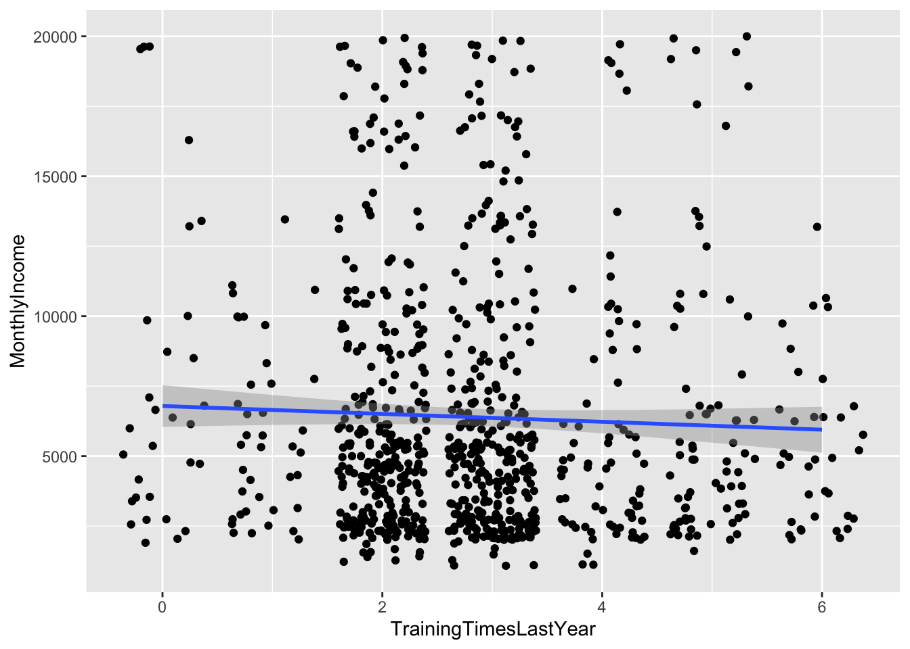
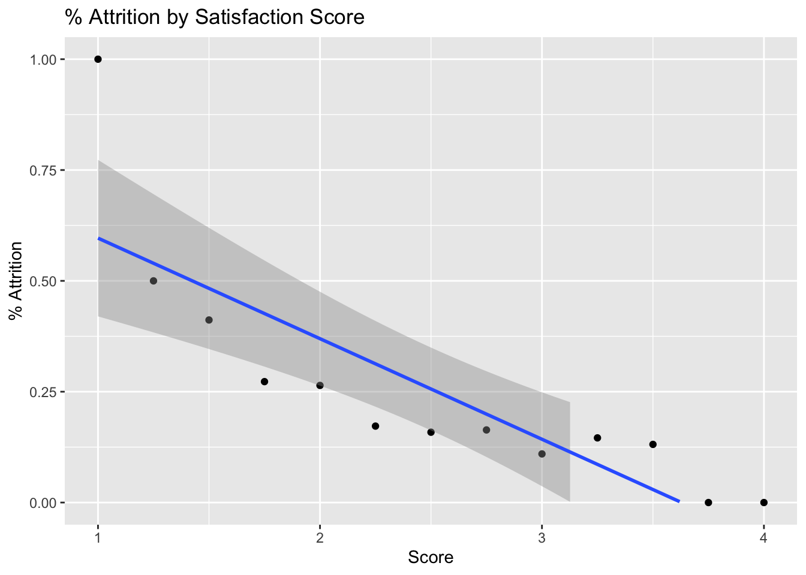

DDS-Project-2
Elyjiah Potter
11/24/2021
Case Study 2 EDA
Import Data
data = read.csv('/Users/elyjiahpotter/Desktop/DDS-Project-2/CaseStudy2-data.csv')
head(data)## ID Age Attrition BusinessTravel DailyRate Department DistanceFromHome Education EducationField EmployeeCount
## 1 1 32 No Travel_Rarely 117 Sales 13 4 Life Sciences 1
## 2 2 40 No Travel_Rarely 1308 Research & Development 14 3 Medical 1
## 3 3 35 No Travel_Frequently 200 Research & Development 18 2 Life Sciences 1
## 4 4 32 No Travel_Rarely 801 Sales 1 4 Marketing 1
## 5 5 24 No Travel_Frequently 567 Research & Development 2 1 Technical Degree 1
## 6 6 27 No Travel_Frequently 294 Research & Development 10 2 Life Sciences 1
## EmployeeNumber EnvironmentSatisfaction Gender HourlyRate JobInvolvement JobLevel JobRole JobSatisfaction MaritalStatus
## 1 859 2 Male 73 3 2 Sales Executive 4 Divorced
## 2 1128 3 Male 44 2 5 Research Director 3 Single
## 3 1412 3 Male 60 3 3 Manufacturing Director 4 Single
## 4 2016 3 Female 48 3 3 Sales Executive 4 Married
## 5 1646 1 Female 32 3 1 Research Scientist 4 Single
## 6 733 4 Male 32 3 3 Manufacturing Director 1 Divorced
## MonthlyIncome MonthlyRate NumCompaniesWorked Over18 OverTime PercentSalaryHike PerformanceRating RelationshipSatisfaction StandardHours
## 1 4403 9250 2 Y No 11 3 3 80
## 2 19626 17544 1 Y No 14 3 1 80
## 3 9362 19944 2 Y No 11 3 3 80
## 4 10422 24032 1 Y No 19 3 3 80
## 5 3760 17218 1 Y Yes 13 3 3 80
## 6 8793 4809 1 Y No 21 4 3 80
## StockOptionLevel TotalWorkingYears TrainingTimesLastYear WorkLifeBalance YearsAtCompany YearsInCurrentRole YearsSinceLastPromotion
## 1 1 8 3 2 5 2 0
## 2 0 21 2 4 20 7 4
## 3 0 10 2 3 2 2 2
## 4 2 14 3 3 14 10 5
## 5 0 6 2 3 6 3 1
## 6 2 9 4 2 9 7 1
## YearsWithCurrManager
## 1 3
## 2 9
## 3 2
## 4 7
## 5 3
## 6 7Check for missing values
gg_miss_var(data)## Warning: It is deprecated to specify `guide = FALSE` to remove a guide. Please use `guide = "none"` instead.
Adjust Attrition Variable for Modeling
data =data %>%
mutate(Attr = case_when( Attrition == "Yes" ~ 1,
Attrition == "No" ~ 0))Investigate Distributions of Potentially Relevant Discrete Variablees
data %>% ggplot(aes(x = Age, fill = Attrition)) + geom_boxplot()data %>% ggplot(aes(x = DailyRate, fill = Attrition)) + geom_boxplot()data %>% ggplot(aes(x = DistanceFromHome, fill = Attrition)) + geom_boxplot()data %>% ggplot(aes(x = Education, fill = Attrition)) + geom_boxplot()data %>% ggplot(aes(x = EnvironmentSatisfaction, fill = Attrition)) + geom_boxplot()data %>% ggplot(aes(x = HourlyRate, fill = Attrition)) + geom_boxplot()data %>% ggplot(aes(x = JobInvolvement, fill = Attrition)) + geom_boxplot()data %>% ggplot(aes(x = JobLevel, fill = Attrition)) + geom_boxplot()data %>% ggplot(aes(x = JobSatisfaction, fill = Attrition)) + geom_boxplot()data %>% ggplot(aes(x = MonthlyIncome, fill = Attrition)) + geom_boxplot()data %>% ggplot(aes(x = MonthlyRate, fill = Attrition)) + geom_boxplot()data %>% ggplot(aes(x = NumCompaniesWorked, fill = Attrition)) + geom_boxplot()data %>% ggplot(aes(x = PercentSalaryHike, fill = Attrition)) + geom_boxplot()data %>% ggplot(aes(x = RelationshipSatisfaction, fill = Attrition)) + geom_boxplot()data %>% ggplot(aes(x = StockOptionLevel, fill = Attrition)) + geom_boxplot()
data %>% ggplot(aes(x = TotalWorkingYears, fill = Attrition)) + geom_boxplot()data %>% ggplot(aes(x = TrainingTimesLastYear, fill = Attrition)) + geom_boxplot()
data %>% ggplot(aes(x = WorkLifeBalance, fill = Attrition)) + geom_boxplot()
data %>% ggplot(aes(x = YearsAtCompany, fill = Attrition)) + geom_boxplot()data %>% ggplot(aes(x = YearsInCurrentRole, fill = Attrition)) + geom_boxplot()data %>% ggplot(aes(x = YearsSinceLastPromotion, fill = Attrition)) + geom_boxplot()data %>% ggplot(aes(x = YearsWithCurrManager, fill = Attrition)) + geom_boxplot()Investigate Distributions of Potentially Relevant Categorical Variables
data %>% ggplot(aes(x = BusinessTravel, fill = Attrition)) + geom_histogram(stat = "count") + facet_wrap(~Attrition)## Warning: Ignoring unknown parameters: binwidth, bins, paddata %>% ggplot(aes(x = EducationField, fill = Attrition)) + geom_histogram(stat = "count") + facet_wrap(~Attrition)## Warning: Ignoring unknown parameters: binwidth, bins, paddata %>% ggplot(aes(x = Gender, fill = Attrition)) + geom_histogram(stat = "count") + facet_wrap(~Attrition)## Warning: Ignoring unknown parameters: binwidth, bins, paddata %>% ggplot(aes(x = MaritalStatus, fill = Attrition)) + geom_histogram(stat = "count") + facet_wrap(~Attrition)## Warning: Ignoring unknown parameters: binwidth, bins, pad
data %>% ggplot(aes(x = Over18, fill = Attrition)) + geom_histogram(stat = "count") + facet_wrap(~Attrition)## Warning: Ignoring unknown parameters: binwidth, bins, paddata %>% ggplot(aes(x = JobRole, fill = Attrition)) + geom_histogram(stat = "count") + facet_wrap(~Attrition)## Warning: Ignoring unknown parameters: binwidth, bins, paddata %>% ggplot(aes(x = OverTime, fill = Attrition)) + geom_histogram(stat = "count") + facet_wrap(~Attrition)## Warning: Ignoring unknown parameters: binwidth, bins, paddata %>% ggplot(aes(x = Department, fill = Attrition)) + geom_histogram(stat = "count") + facet_wrap(~Attrition)## Warning: Ignoring unknown parameters: binwidth, bins, padAge Breakdown
#Aggregate Data
age_factor = cut(data$Age, breaks = c(13,19,29,39,49,59,69,79,89), labels = c("Teens", "Twenties", "Thirties", "Forties", "Fifties","Sixties","Seventies","Eighties"))
data = data %>%
mutate(age_range = age_factor)
data %>%
group_by(age_range) %>%
summarize(attrition_count = sum(Attr), Count = n(), perc_attrition = sum(Attr)/n()) ## # A tibble: 6 × 4
## age_range attrition_count Count perc_attrition
## <fct> <dbl> <int> <dbl>
## 1 Teens 8 13 0.615
## 2 Twenties 44 172 0.256
## 3 Thirties 54 381 0.142
## 4 Forties 21 215 0.0977
## 5 Fifties 13 86 0.151
## 6 Sixties 0 3 0# Plot Aggregated Data - Barplot
data %>%
group_by(age_range) %>%
summarize(attrition_count = sum(Attr), Count = n(), perc_attrition = sum(Attr)/n()) %>%
ggplot(aes(x = age_range, y = perc_attrition, fill = age_range)) +
geom_bar(stat = "identity") +
ggtitle("% Attrition by Age") +
xlab("Age") +
ylab("% Attrition") +
theme(legend.position = "none")
data = data %>%
mutate(age_order = case_when(
grepl("Teens",age_range) ~ 1,
grepl("Twenties",age_range) ~ 2,
grepl("Thirties",age_range) ~ 3,
grepl( "Forties",age_range) ~ 4,
grepl("Fifties",age_range) ~ 5,
grepl("Sixties",age_range) ~ 6
))
# Scatterplot Comparison
data %>%
group_by(age_range, age_order) %>%
summarize(attrition_count = sum(Attr), Count = n(), perc_attrition = sum(Attr)/n()) %>%
ggplot(aes(x = age_order, y = perc_attrition)) +
geom_point() +
geom_smooth(method = "lm") +
ggtitle("% Attrition by Age") +
xlab("Age Rank") +
ylab("% Attrition") +
theme(legend.position = "none")## `summarise()` has grouped output by 'age_range'. You can override using the `.groups` argument.## `geom_smooth()` using formula 'y ~ x'
Satisfaction Score Creation
data = data %>%
mutate(OverallSatisfaction = (JobSatisfaction+EnvironmentSatisfaction+WorkLifeBalance+RelationshipSatisfaction)/4)
data %>%
group_by(OverallSatisfaction) %>%
summarize(perc_attrition = sum(Attr)/n()) %>%
ggplot(aes(x = OverallSatisfaction, perc_attrition)) +
geom_point() +
geom_smooth(method = "lm") +
ylim(0,1)## `geom_smooth()` using formula 'y ~ x'## Warning: Removed 10 rows containing missing values (geom_smooth).Involvement Score Creation
data = data %>%
mutate(Involvement = (JobInvolvement+TrainingTimesLastYear+StockOptionLevel)/3)
data %>%
group_by(Involvement) %>%
summarize(perc_attrition = sum(Attr)/n()) %>%
ggplot(aes(x = Involvement, y = perc_attrition)) +
geom_point() +
geom_smooth(method = "lm")## `geom_smooth()` using formula 'y ~ x'Percent Attrition by key Discrete attributes
# Years by perc attrition
data %>%
group_by(YearsAtCompany) %>%
summarize(perc_attrition = sum(Attr)/n()) %>%
ggplot(aes(x = YearsAtCompany, y = perc_attrition)) +
geom_point()
data %>%
group_by(YearsAtCompany) %>%
summarize(perc_attrition = sum(Attr)/n()) %>%
ggplot(aes(x = YearsAtCompany, y = perc_attrition)) +
geom_point()# Distance by perc Attrition
data %>%
group_by(DistanceFromHome) %>%
summarize(perc_attrition = sum(Attr)/n()) %>%
ggplot(aes(x = DistanceFromHome, y = perc_attrition)) +
geom_point()# Total Working Years by Attrition
data %>%
group_by(TotalWorkingYears) %>%
summarize(perc_attrition = sum(Attr)/n()) %>%
ggplot(aes(x = TotalWorkingYears, y = perc_attrition)) +
geom_point()Percent Attrition by key Categorical attributes
# Higher chance of attrition for teen males
data %>%
group_by(age_range, Gender) %>%
summarize(perc_attrition = sum(Attr)/n()) %>%
ggplot(aes(x = age_range, y = Gender, fill = perc_attrition)) +
geom_tile()## `summarise()` has grouped output by 'age_range'. You can override using the `.groups` argument.# Higher chance of attrition for sales representatives
data %>%
group_by(Department, JobRole) %>%
summarize(perc_attrition = sum(Attr)/n()) %>%
ggplot(aes(x = Department, y = JobRole, fill = perc_attrition)) +
geom_tile()## `summarise()` has grouped output by 'Department'. You can override using the `.groups` argument.# Higher chance of attrition for single individuals with a technical degree
data %>%
group_by(MaritalStatus, EducationField) %>%
summarize(perc_attrition = sum(Attr)/n()) %>%
ggplot(aes(x = MaritalStatus, y = EducationField, fill = perc_attrition)) +
geom_tile()## `summarise()` has grouped output by 'MaritalStatus'. You can override using the `.groups` argument.Education Field Attrition
#Aggregate Data
data %>%
group_by(EducationField) %>%
summarize(attrition_count = sum(Attr), Count = n(), perc_attrition = sum(Attr)/n()) ## # A tibble: 6 × 4
## EducationField attrition_count Count perc_attrition
## <chr> <dbl> <int> <dbl>
## 1 Human Resources 4 15 0.267
## 2 Life Sciences 53 358 0.148
## 3 Marketing 20 100 0.2
## 4 Medical 37 270 0.137
## 5 Other 9 52 0.173
## 6 Technical Degree 17 75 0.227# Plot Aggregated Data
data %>%
group_by(EducationField) %>%
summarize(attrition_count = sum(Attr), Count = n(), perc_attrition = sum(Attr)/n()) %>%
ggplot(aes(x = reorder(EducationField, perc_attrition), y = perc_attrition, fill = EducationField)) +
geom_bar(stat = "identity") +
ggtitle("% Attrition by Education Field") +
xlab("Education Field") +
ylab("% Attrition") +
theme(legend.position = "none")Education Field Satisfaction
#Aggregate Data
data %>%
group_by(EducationField) %>%
summarize(Count = n(), avg_satisfaction = sum(JobSatisfaction)/n()) ## # A tibble: 6 × 3
## EducationField Count avg_satisfaction
## <chr> <int> <dbl>
## 1 Human Resources 15 2.47
## 2 Life Sciences 358 2.74
## 3 Marketing 100 2.68
## 4 Medical 270 2.71
## 5 Other 52 2.75
## 6 Technical Degree 75 2.6# Plot Aggregated Data
data %>%
group_by(EducationField) %>%
summarize(Count = n(), avg_satisfaction = sum(JobSatisfaction)/n()) %>%
ggplot(aes(x = reorder(EducationField, avg_satisfaction), y = avg_satisfaction, fill = EducationField)) +
geom_bar(stat = "identity") +
ggtitle("Avg Satisfaction by Education Field") +
xlab("Education Field") +
ylab("Avg Satisfaction") +
coord_cartesian(ylim=c(2.4,2.75)) +
theme(legend.position = "none") Position Attrition
#Aggregate Data
data %>%
group_by(JobRole) %>%
summarize(attrition_count = sum(Attr), Count = n(), perc_attrition = sum(Attr)/n()) ## # A tibble: 9 × 4
## JobRole attrition_count Count perc_attrition
## <chr> <dbl> <int> <dbl>
## 1 Healthcare Representative 8 76 0.105
## 2 Human Resources 6 27 0.222
## 3 Laboratory Technician 30 153 0.196
## 4 Manager 4 51 0.0784
## 5 Manufacturing Director 2 87 0.0230
## 6 Research Director 1 51 0.0196
## 7 Research Scientist 32 172 0.186
## 8 Sales Executive 33 200 0.165
## 9 Sales Representative 24 53 0.453# Plot Aggregated Data
data %>%
group_by(JobRole) %>%
summarize(attrition_count = sum(Attr), Count = n(), perc_attrition = sum(Attr)/n()) %>%
ggplot(aes(x = reorder(JobRole, perc_attrition), y = perc_attrition, fill = JobRole)) +
geom_bar(stat = "identity") +
ggtitle("% Attrition by Position") +
xlab("Position") +
ylab("% Attrition") +
theme(legend.position = "none") +
theme(axis.text.x = element_text(angle = 50,
vjust = 1,
hjust = 1,
size = 8))Position Avg Satisfaction
#Aggregate Data
data %>%
group_by(JobRole) %>%
summarize(Count = n(),avg_satisfaction = sum(JobSatisfaction)/n()) ## # A tibble: 9 × 3
## JobRole Count avg_satisfaction
## <chr> <int> <dbl>
## 1 Healthcare Representative 76 2.83
## 2 Human Resources 27 2.56
## 3 Laboratory Technician 153 2.69
## 4 Manager 51 2.51
## 5 Manufacturing Director 87 2.72
## 6 Research Director 51 2.49
## 7 Research Scientist 172 2.80
## 8 Sales Executive 200 2.72
## 9 Sales Representative 53 2.70# Plot Aggregated Data
data %>%
group_by(JobRole) %>%
summarize(Count = n(),avg_satisfaction = sum(JobSatisfaction)/n()) %>%
ggplot(aes(x = reorder(JobRole,avg_satisfaction), y = avg_satisfaction, fill = JobRole)) +
geom_bar(stat = "identity") +
ggtitle("Avg Satisfaction by Position") +
xlab("Position") +
ylab("Avg Satisfaction") +
theme(legend.position = "none") +
coord_cartesian(ylim=c(2.4,2.85)) +
theme(axis.text.x = element_text(angle = 50,
vjust = 1,
hjust = 1,
size = 8))Gender / Age Attrition
#Aggregate Data
age_data = data %>%
group_by(Gender, age_range) %>%
summarize(attrition_count = sum(Attr), Count = n(), perc_attrition = sum(Attr)/n())## `summarise()` has grouped output by 'Gender'. You can override using the `.groups` argument.age_gender = data.frame(paste(age_data$Gender, age_data$age_range))
colnames(age_gender) = "age_gender"
age_data = cbind(age_data, age_gender)
age_data$age_gender = factor(age_data$age_gender)
age_data = age_data %>%
mutate(order = case_when(
grepl("Teens",age_range) ~ 1,
grepl("Twenties",age_range) ~ 2,
grepl("Thirties",age_range) ~ 3,
grepl( "Forties",age_range) ~ 4,
grepl("Fifties",age_range) ~ 5,
grepl("Sixties",age_range) ~ 6
))
# Plot Aggregated Data
age_data %>%
ggplot(aes(x = reorder(age_gender,order), y = perc_attrition, fill = Gender)) +
geom_bar(stat = "identity") +
ggtitle("% Attrition by Age and Gender") +
xlab("Age / Gender") +
ylab("% Attrition") +
theme(legend.position = "none") +
theme(axis.text.x = element_text(angle = 50,
vjust = 1,
hjust = 1,
size = 8))Gender / Age Avg Satisfaction
#Aggregate Data
age_data = data %>%
group_by(Gender, age_range) %>%
summarize(Count = n(), avg_satisfaction = sum(JobSatisfaction)/n())## `summarise()` has grouped output by 'Gender'. You can override using the `.groups` argument.age_gender = data.frame(paste(age_data$Gender, age_data$age_range))
colnames(age_gender) = "age_gender"
age_data = cbind(age_data, age_gender)
age_data$age_gender = factor(age_data$age_gender)
age_data = age_data %>%
mutate(order = case_when(
grepl("Teens",age_range) ~ 1,
grepl("Twenties",age_range) ~ 2,
grepl("Thirties",age_range) ~ 3,
grepl( "Forties",age_range) ~ 4,
grepl("Fifties",age_range) ~ 5,
grepl("Sixties",age_range) ~ 6
))
# Plot Aggregated Data
age_data %>%
ggplot(aes(x = reorder(age_gender,order), y = avg_satisfaction, fill = Gender)) +
geom_bar(stat = "identity") +
ggtitle("Avg Satisfaction by Age and Gender") +
xlab("Age / Gender") +
ylab("Avg Satisfaction") +
theme(legend.position = "none") +
coord_cartesian(ylim=c(2.4,3.2)) +
theme(axis.text.x = element_text(angle = 50,
vjust = 1,
hjust = 1,
size = 8))Gender / Age / Marital Status Attrition
#Aggregate Data
age_data = data %>%
group_by(MaritalStatus, Gender, age_range) %>%
summarize(attrition_count = sum(Attr), Count = n(), perc_attrition = sum(Attr)/n())## `summarise()` has grouped output by 'MaritalStatus', 'Gender'. You can override using the `.groups` argument.age_gender = data.frame(paste(age_data$Gender, age_data$MaritalStatus, age_data$age_range))
colnames(age_gender) = "age_gender_marital"
age_data = cbind(age_data, age_gender)
age_data$age_gender_marital = factor(age_data$age_gender_marital)
age_data = age_data %>%
mutate(order = case_when(
grepl("Teens",age_range) ~ 1,
grepl("Twenties",age_range) ~ 2,
grepl("Thirties",age_range) ~ 3,
grepl( "Forties",age_range) ~ 4,
grepl("Fifties",age_range) ~ 5,
grepl("Sixties",age_range) ~ 6
))
# Plot Aggregated Data
age_data %>%
ggplot(aes(x = reorder(age_gender_marital,order), y = perc_attrition, fill = Gender)) +
geom_bar(stat = "identity") +
ggtitle("% Attrition by Age, Gender, and Marital Status") +
xlab("Age / Gender / Marital Status") +
ylab("% Attrition") +
theme(legend.position = "none") +
theme(axis.text.x = element_text(angle = 50,
vjust = 1,
hjust = 1,
size = 8))Investigating Relationship betweeen Income, Satisfaction, and Job Level
roledata = data %>%
select(JobRole,JobLevel,OverallSatisfaction,TrainingTimesLastYear,MonthlyIncome) %>%
mutate(RoleLevel = paste(JobRole, " Level: ", JobLevel))
graph_roledata = roledata %>%
group_by(RoleLevel) %>%
summarize(AvgIncome = sum(MonthlyIncome)/n(), AvgTraining = sum(TrainingTimesLastYear)/n(), AvgSatisfaction = sum(OverallSatisfaction)/n())
graph_roledata %>%
ggplot(aes(x = RoleLevel, y = AvgIncome, fill = AvgSatisfaction)) +
geom_bar(stat = "identity") +
theme(axis.text.x = element_text(angle = 90,
vjust = 1,
hjust = 1,
size = 8)) +
ggtitle("Monthly Income by Role / Level") +
ylab("Avg Monthly Income") +
xlab("Role / Level")graph_roledata %>%
ggplot(aes(x = reorder(RoleLevel, AvgSatisfaction), y = AvgSatisfaction)) +
geom_bar(stat = "identity", fill = "darkslategray3") +
theme(axis.text.x = element_text(angle = 70,
vjust = 1,
hjust = 1,
size = 8)) +
ggtitle("Satisfaction by Role / Level") +
ylab("Avg Satisfaction") +
xlab("Role / Level")Investigate Key Categorization Attributes
Use constant value Over18 for y value for consistent comparison
for(i in 2:40)
{
p = ggplot(data = data, mapping = aes(x = data[,i], y = Over18, color = Attr)) + geom_point(position = "jitter") + xlab(colnames(data[i]))
print(p)
} 

Clean up data for modeling
data2 = select_if(data,is.numeric)
data2 = data2[,1:31]
data2_not = select(data,!is.numeric)
data2_not = data2_not[,2:9]
data2_not = data2_not %>%
mutate(BusinessTravelRank = case_when(
grepl("Non-Travel", BusinessTravel) ~ 0,
grepl("Travel_Rarely", BusinessTravel) ~ 1,
grepl("Travel_Frequently", BusinessTravel) ~ 3
)) %>%
mutate(DepartmentRank = case_when(
grepl("Research & Development", Department) ~ 1,
grepl("Human Resources", Department) ~ 2,
grepl("Sales", Department) ~ 3
)) %>%
mutate(EducationFieldRank = case_when(
grepl("Life Sciences", EducationField) ~ 1,
grepl("Medical", EducationField) ~ 2,
grepl("Marketing", EducationField) ~ 3,
grepl("Technical Degree", EducationField) ~ 4,
grepl("Other", EducationField) ~ 5,
grepl("Human Resources", EducationField) ~ 6
)) %>%
mutate(GenderRank = case_when(
grepl("Male", Gender) ~ 0,
grepl("Female", Gender) ~ 1
)) %>%
mutate(OvertimeRank = case_when(
grepl("Yes", OverTime) ~ 0,
grepl("No", OverTime) ~ 1
))
data2_not = select_if(data2_not,is.numeric)
data2 = cbind(data2,data2_not)
gg_miss_var(data2)## Warning: It is deprecated to specify `guide = FALSE` to remove a guide. Please use `guide = "none"` instead.Classification: KNN
splitPerc = 0.75
trainInices = sample(1:dim(data2)[1], round(splitPerc * dim(data2)[1]))
train = data2[trainInices,]
test = data2[-trainInices,]
# Create model info dataframe
model_info = data.frame(matrix(ncol = 3, nrow = 100000))
colnames(model_info) = c("Model", "Sensitivity","Specificity")
tic = 1 # Ticker for loop
# Uncomment for k value loop
# for(l in 2:30)
#{
for (i in 2:36)
{
for(j in i:36)
{
for(k in j:36)
{
classifications = knn(train[,c(i,j,k)], test[,c(i,j,k)], train$Attr, prob = TRUE, k = 11)
table(classifications, test$Attr)
x = confusionMatrix(table(classifications, test$Attr))
# Comment for k valu eloop
model_info$Model[tic]=(paste("Model for ",colnames(data2[i]), " and ", colnames(data2[j]), " and ", colnames(data2[k])))
# Uncomment for k value loop
# model_info$Model[tic]=(paste("Model for ",colnames(data2[i]), " and ", colnames(data2[j]), " and ", colnames(data2[k]), " and k = ", l))
model_info$Sensitivity[tic] = x$byClass[1]
model_info$Specificity[tic] = x$byClass[2]
tic = tic + 1
}
}
}
#} Uncomment for k value loop
output = model_info %>%
filter(!grepl("Attr",Model)) %>%
arrange(-Specificity)
head(output)## Model Sensitivity Specificity
## 1 Model for StockOptionLevel and OverallSatisfaction and OvertimeRank 0.9513514 0.3939394
## 2 Model for EmployeeCount and JobLevel and OvertimeRank 0.9243243 0.3636364
## 3 Model for EnvironmentSatisfaction and StockOptionLevel and OvertimeRank 0.9567568 0.3636364
## 4 Model for JobLevel and JobLevel and OvertimeRank 0.9243243 0.3636364
## 5 Model for JobLevel and PerformanceRating and OvertimeRank 0.9243243 0.3636364
## 6 Model for JobLevel and StandardHours and OvertimeRank 0.9243243 0.3636364Classification: Naive Bayes
bayes_model = naiveBayes(Attr~., data = data2)
predict(bayes_model, data2)## [1] 0 0 0 0 1 0 0 0 0 0 0 0 0 1 0 0 0 0 0 0 0 0 0 0 0 0 0 1 1 0 0 0 0 0 0 1 0 0 0 0 0 0 0 0 0 0 1 0 1 1 0 0 0 0 0 0 0 0 0 1 0 0 0 1 1 0
## [67] 0 0 0 0 0 0 1 0 0 0 0 0 0 0 1 0 0 0 0 0 0 1 0 0 0 0 1 0 0 0 0 0 0 0 0 0 0 1 0 0 0 0 0 0 1 0 0 0 0 0 0 1 0 0 0 1 0 0 0 0 1 0 0 0 1 0
## [133] 0 0 0 0 1 0 1 0 0 0 0 0 0 0 0 0 1 1 1 0 0 0 0 1 0 0 0 0 0 0 0 0 0 1 0 0 0 0 0 0 0 0 0 1 0 1 0 0 0 0 0 0 0 0 0 0 0 0 0 0 0 0 1 0 0 0
## [199] 0 1 0 0 0 1 0 1 1 1 0 0 0 0 0 0 1 0 0 0 0 1 0 0 0 1 0 0 0 1 1 0 0 0 0 0 0 0 0 0 1 0 0 0 0 1 0 0 0 0 0 0 0 0 0 0 0 0 0 0 0 1 1 1 0 0
## [265] 0 0 0 0 0 0 0 0 0 0 0 0 1 0 1 0 0 0 0 0 0 0 1 0 0 0 0 0 0 0 0 0 0 1 1 1 0 0 0 0 0 1 0 0 0 0 0 0 0 0 1 0 0 1 0 1 0 0 0 0 0 0 0 0 0 0
## [331] 0 0 0 0 0 0 0 0 0 0 1 1 0 0 0 0 0 0 1 0 0 0 1 0 0 0 1 1 0 0 0 1 0 0 0 0 0 0 0 0 0 0 0 0 1 0 0 0 1 1 0 0 0 1 0 0 0 0 0 1 0 1 0 0 0 1
## [397] 0 1 0 0 0 0 0 0 1 0 0 0 0 0 1 0 1 0 1 0 0 0 0 0 0 0 1 0 1 0 0 1 1 0 1 0 1 1 0 0 0 0 1 0 0 0 1 0 0 0 0 0 0 0 0 0 0 0 0 0 0 1 0 0 0 0
## [463] 0 0 1 0 0 0 1 0 0 1 0 0 0 0 0 1 1 0 0 0 0 0 0 1 0 0 1 0 0 0 1 0 0 0 0 0 0 1 0 1 0 0 0 0 1 0 0 0 0 0 0 0 1 0 1 0 0 0 0 1 0 0 0 0 0 1
## [529] 0 0 0 0 0 0 1 0 0 0 1 0 0 0 1 0 0 0 0 0 0 0 0 0 1 0 0 0 0 0 0 0 0 0 1 0 0 0 0 0 0 0 0 1 0 0 0 0 1 0 0 0 0 0 1 1 0 0 0 1 0 0 1 1 1 0
## [595] 0 0 0 0 1 1 1 0 0 0 1 0 0 0 0 1 0 0 0 1 0 0 0 1 0 0 1 0 0 0 1 0 0 0 0 0 0 0 0 0 0 0 0 0 0 0 0 0 0 1 1 0 1 1 0 1 0 0 0 0 1 1 0 0 0 0
## [661] 0 0 0 0 0 0 0 1 0 0 0 0 0 1 1 0 0 0 0 0 1 0 0 0 1 0 0 0 1 0 0 0 0 1 0 1 0 0 1 0 1 0 0 1 0 0 0 0 0 0 0 0 0 0 0 1 0 0 0 0 0 0 0 0 0 0
## [727] 0 0 1 0 0 1 1 0 0 0 0 0 0 1 1 0 0 1 1 1 1 0 1 0 1 1 0 0 0 1 0 0 0 0 1 0 0 0 1 1 0 1 0 0 0 0 0 1 0 0 0 0 0 0 1 0 0 0 0 0 0 0 0 0 0 0
## [793] 0 0 0 1 0 1 1 0 0 0 0 0 0 0 1 0 0 1 0 1 1 0 0 0 1 0 0 1 0 0 0 0 0 0 0 1 0 0 0 1 0 1 0 0 0 0 0 0 1 0 0 0 1 0 1 0 0 0 1 0 0 0 1 0 0 0
## [859] 0 0 0 0 1 0 0 0 0 0 0 0
## Levels: 0 1confusionMatrix(table(predict(bayes_model,data2), data2$Attr))## Confusion Matrix and Statistics
##
##
## 0 1
## 0 639 53
## 1 91 87
##
## Accuracy : 0.8345
## 95% CI : (0.8081, 0.8586)
## No Information Rate : 0.8391
## P-Value [Acc > NIR] : 0.664134
##
## Kappa : 0.4477
##
## Mcnemar's Test P-Value : 0.002047
##
## Sensitivity : 0.8753
## Specificity : 0.6214
## Pos Pred Value : 0.9234
## Neg Pred Value : 0.4888
## Prevalence : 0.8391
## Detection Rate : 0.7345
## Detection Prevalence : 0.7954
## Balanced Accuracy : 0.7484
##
## 'Positive' Class : 0
## # Note - while we initially worked to construct a knn model, the max specificity we could obtain was roughly 30%. Since this was below our 60% threshold, we moved forward with a probability based naive bayes model instead.Linear Regression Model Investigation for correlation
for(i in 2:36)
{
p = ggplot(data = data2, mapping = aes(x = data2[,i], y = MonthlyIncome,)) + geom_point(position = "jitter") + geom_smooth(method = "lm") + xlab(colnames(data2[i]))
print(p)
}## `geom_smooth()` using formula 'y ~ x'## `geom_smooth()` using formula 'y ~ x'## `geom_smooth()` using formula 'y ~ x'## `geom_smooth()` using formula 'y ~ x'## `geom_smooth()` using formula 'y ~ x'## `geom_smooth()` using formula 'y ~ x'## `geom_smooth()` using formula 'y ~ x'## `geom_smooth()` using formula 'y ~ x'## `geom_smooth()` using formula 'y ~ x'## `geom_smooth()` using formula 'y ~ x'## `geom_smooth()` using formula 'y ~ x'## `geom_smooth()` using formula 'y ~ x'## `geom_smooth()` using formula 'y ~ x'## `geom_smooth()` using formula 'y ~ x'## `geom_smooth()` using formula 'y ~ x'## `geom_smooth()` using formula 'y ~ x'## `geom_smooth()` using formula 'y ~ x'## `geom_smooth()` using formula 'y ~ x'
## `geom_smooth()` using formula 'y ~ x'## `geom_smooth()` using formula 'y ~ x'## `geom_smooth()` using formula 'y ~ x'
## `geom_smooth()` using formula 'y ~ x'
## `geom_smooth()` using formula 'y ~ x'## `geom_smooth()` using formula 'y ~ x'## `geom_smooth()` using formula 'y ~ x'## `geom_smooth()` using formula 'y ~ x'## `geom_smooth()` using formula 'y ~ x'## `geom_smooth()` using formula 'y ~ x'## `geom_smooth()` using formula 'y ~ x'## `geom_smooth()` using formula 'y ~ x'## `geom_smooth()` using formula 'y ~ x'## `geom_smooth()` using formula 'y ~ x'## `geom_smooth()` using formula 'y ~ x'## `geom_smooth()` using formula 'y ~ x'## `geom_smooth()` using formula 'y ~ x'
Top Attributes:
- Age
- Education
- Job Level
- Total Working Years
- Years at Company
- Years in current role
- Years since last promotion
- Years with current manager
Collinearity
- Job Level Total Working Years, Years at Company, Years in Current Role, Years since Last promotion, and Years with current manager are all likely correlated, so we will use the one with the strongest correlation with income: Job Level
Linear Regression Model with Top 3 correlating attributes
fit = lm(MonthlyIncome ~ Age + JobLevel + Education , data = data2)
summary(fit)##
## Call:
## lm(formula = MonthlyIncome ~ Age + JobLevel + Education, data = data2)
##
## Residuals:
## Min 1Q Median 3Q Max
## -5121.1 -950.7 68.5 740.9 3852.0
##
## Coefficients:
## Estimate Std. Error t value Pr(>|t|)
## (Intercept) -2310.409 223.920 -10.318 < 2e-16 ***
## Age 19.041 6.193 3.075 0.00217 **
## JobLevel 3940.417 49.922 78.932 < 2e-16 ***
## Education -12.211 47.825 -0.255 0.79854
## ---
## Signif. codes: 0 '***' 0.001 '**' 0.01 '*' 0.05 '.' 0.1 ' ' 1
##
## Residual standard error: 1407 on 866 degrees of freedom
## Multiple R-squared: 0.9066, Adjusted R-squared: 0.9063
## F-statistic: 2804 on 3 and 866 DF, p-value: < 2.2e-16RSS = c(crossprod(fit$residuals))
MSE = RSS/length(fit$residuals)
RMSE = sqrt(MSE)
print(RMSE)## [1] 1403.957Testing other regression combinations
model_df = data.frame(matrix(ncol = 6, nrow = 100000))
colnames(model_df) = c("Model", "Intercept","First", "Second", "Third", "RMSE")
tic = 0
for (i in 2:36)
{
for(j in i:36)
{
for(k in j:36)
{
fit = lm(MonthlyIncome ~ data2[,i] + data2[,j] + data2[,k] , data = data2)
x = summary(fit)
RSS = c(crossprod(fit$residuals))
MSE = RSS/length(fit$residuals)
RMSE = sqrt(MSE)
model_df$Model[tic] = paste(colnames(data2[i]), " and ", colnames(data2[j]), " and ", colnames(data2[k]))
model_df$Intercept[tic] = x$coefficients[13]
model_df$First[tic] = x$coefficients[14]
model_df$Second[tic] = x$coefficients[15]
model_df$Third[tic] = x$coefficients[16]
model_df$RMSE[tic] = RMSE
tic = tic + 1
}
}
}
output = model_df %>%
filter(!grepl("MonthlyIncome", Model)) %>%
filter(!is.na(Intercept)) %>%
arrange(RMSE)
head(output)## Model Intercept First Second Third RMSE
## 1 JobLevel and TotalWorkingYears and YearsWithCurrManager 3.875726e-54 2.198417e-280 1.014850e-10 6.182710e-05 1374.498
## 2 JobLevel and TotalWorkingYears and DepartmentRank 8.112807e-31 5.599165e-278 1.695192e-06 1.011159e-04 1375.237
## 3 JobLevel and TotalWorkingYears and YearsAtCompany 1.028183e-59 1.245489e-279 2.636976e-10 1.578655e-03 1379.319
## 4 JobLevel and TotalWorkingYears and YearsInCurrentRole 6.344685e-56 2.816539e-279 6.816520e-10 2.514322e-03 1380.000
## 5 DistanceFromHome and JobLevel and TotalWorkingYears 2.183966e-44 1.055329e-02 7.578019e-279 4.793820e-08 1382.068
## 6 JobLevel and TotalWorkingYears and YearsSinceLastPromotion 1.781831e-61 1.595467e-277 9.082826e-09 8.836960e-02 1384.973Findings: JobLevel, age_order and DepartmentRank yield the lowest RMSE from the attribute set combinataions that are not collinear
Final Linear Regression Model
lin_fit = lm(MonthlyIncome ~ JobLevel + age_order + DepartmentRank , data = data2)
summary(lin_fit)##
## Call:
## lm(formula = MonthlyIncome ~ JobLevel + age_order + DepartmentRank,
## data = data2)
##
## Residuals:
## Min 1Q Median 3Q Max
## -5279.4 -900.4 28.7 823.6 4131.7
##
## Coefficients:
## Estimate Std. Error t value Pr(>|t|)
## (Intercept) -1855.89 191.46 -9.693 < 2e-16 ***
## JobLevel 3971.23 49.20 80.720 < 2e-16 ***
## age_order 165.89 56.79 2.921 0.00358 **
## DepartmentRank -232.00 51.71 -4.486 8.23e-06 ***
## ---
## Signif. codes: 0 '***' 0.001 '**' 0.01 '*' 0.05 '.' 0.1 ' ' 1
##
## Residual standard error: 1390 on 866 degrees of freedom
## Multiple R-squared: 0.9089, Adjusted R-squared: 0.9086
## F-statistic: 2881 on 3 and 866 DF, p-value: < 2.2e-16RSS = c(crossprod(lin_fit$residuals))
MSE = RSS/length(lin_fit$residuals)
RMSE = sqrt(MSE)
print(RMSE)## [1] 1386.747Top Three Factors for Attrition
Age
Involvement
Satisfaction Score
Age vs % Attrition
data %>%
group_by(age_range) %>%
summarize(attrition_count = sum(Attr), Count = n(), perc_attrition = sum(Attr)/n()) %>%
ggplot(aes(x = age_range, y = perc_attrition, fill = age_range)) +
geom_bar(stat = "identity") +
ggtitle("% Attrition by Age") +
xlab("Age") +
ylab("% Attrition") +
theme(legend.position = "none")data %>%
group_by(age_range, age_order) %>%
summarize(attrition_count = sum(Attr), Count = n(), perc_attrition = sum(Attr)/n()) %>%
ggplot(aes(x = age_order, y = perc_attrition)) +
geom_point() +
geom_smooth(method = "lm") +
ggtitle("% Attrition by Age") +
xlab("Age Rank") +
ylab("% Attrition") +
theme(legend.position = "none")## `summarise()` has grouped output by 'age_range'. You can override using the `.groups` argument.## `geom_smooth()` using formula 'y ~ x'Satisfaction Score vs % Attrition
data = data %>%
mutate(OverallSatisfaction = (JobSatisfaction+EnvironmentSatisfaction+WorkLifeBalance+RelationshipSatisfaction)/4)
data %>%
group_by(OverallSatisfaction) %>%
summarize(perc_attrition = sum(Attr)/n()) %>%
ggplot(aes(x = OverallSatisfaction, perc_attrition)) +
geom_point() +
geom_smooth(method = "lm") +
ylim(0,1) +
ggtitle("% Attrition by Satisfaction Score") +
xlab("Score") +
ylab("% Attrition") +
theme(legend.position = "none")## `geom_smooth()` using formula 'y ~ x'## Warning: Removed 10 rows containing missing values (geom_smooth).
Involvement Score vs % Attrition
data = data %>%
mutate(Involvement = (JobInvolvement+TrainingTimesLastYear+StockOptionLevel)/3)
data %>%
group_by(Involvement) %>%
summarize(perc_attrition = sum(Attr)/n()) %>%
ggplot(aes(x = Involvement, y = perc_attrition)) +
geom_point() +
geom_smooth(method = "lm") +
ggtitle("% Attrition by Involvement Score") +
xlab("Score") +
ylab("% Attrition") +
theme(legend.position = "none")## `geom_smooth()` using formula 'y ~ x'Testing Naive Bayes and Linear Regression Model
Import and Transform Data
class = read.csv("/Users/elyjiahpotter/Desktop/CaseStudy2CompSet No Attrition.csv")
linear = read.csv("/Users/elyjiahpotter/Desktop/CaseStudy2CompSet No Salary.csv")
# Adjust to include an Attr column (dummy column to maintain dataset architecture)
class = class %>%
mutate(Attr = 0)
age_factor = cut(class$Age, breaks = c(13,19,29,39,49,59,69,79,89), labels = c("Teens", "Twenties", "Thirties", "Forties", "Fifties","Sixties","Seventies","Eighties"))
class = class %>%
mutate(age_range = age_factor)
class = class %>%
mutate(age_order = case_when(
grepl("Teens",age_range) ~ 1,
grepl("Twenties",age_range) ~ 2,
grepl("Thirties",age_range) ~ 3,
grepl( "Forties",age_range) ~ 4,
grepl("Fifties",age_range) ~ 5,
grepl("Sixties",age_range) ~ 6
))
class = class %>%
mutate(OverallSatisfaction = (JobSatisfaction+EnvironmentSatisfaction+WorkLifeBalance+RelationshipSatisfaction)/4) %>%
mutate(Involvement = (JobInvolvement+TrainingTimesLastYear+StockOptionLevel)/3)
class2 = select_if(class,is.numeric)
class2 = class2[,1:31]
class2_not = select(class,!is.numeric)
class2_not = class2_not %>%
mutate(BusinessTravelRank = case_when(
grepl("Non-Travel", BusinessTravel) ~ 0,
grepl("Travel_Rarely", BusinessTravel) ~ 1,
grepl("Travel_Frequently", BusinessTravel) ~ 3
)) %>%
mutate(DepartmentRank = case_when(
grepl("Research & Development", Department) ~ 1,
grepl("Human Resources", Department) ~ 2,
grepl("Sales", Department) ~ 3
)) %>%
mutate(EducationFieldRank = case_when(
grepl("Life Sciences", EducationField) ~ 1,
grepl("Medical", EducationField) ~ 2,
grepl("Marketing", EducationField) ~ 3,
grepl("Technical Degree", EducationField) ~ 4,
grepl("Other", EducationField) ~ 5,
grepl("Human Resources", EducationField) ~ 6
)) %>%
mutate(GenderRank = case_when(
grepl("Male", Gender) ~ 0,
grepl("Female", Gender) ~ 1
)) %>%
mutate(OvertimeRank = case_when(
grepl("Yes", OverTime) ~ 0,
grepl("No", OverTime) ~ 1
))
class2_not = select_if(class2_not,is.numeric)
class2 = cbind(class2,class2_not)
gg_miss_var(class2)## Warning: It is deprecated to specify `guide = FALSE` to remove a guide. Please use `guide = "none"` instead.
linear = linear %>%
mutate(Attr = case_when( Attrition == "Yes" ~ 1,
Attrition == "No" ~ 0))
age_factor = cut(linear$Age, breaks = c(13,19,29,39,49,59,69,79,89), labels = c("Teens", "Twenties", "Thirties", "Forties", "Fifties","Sixties","Seventies","Eighties"))
linear = linear %>%
mutate(age_range = age_factor)
linear = linear %>%
mutate(age_order = case_when(
grepl("Teens",age_range) ~ 1,
grepl("Twenties",age_range) ~ 2,
grepl("Thirties",age_range) ~ 3,
grepl( "Forties",age_range) ~ 4,
grepl("Fifties",age_range) ~ 5,
grepl("Sixties",age_range) ~ 6
))
linear = linear %>%
mutate(OverallSatisfaction = (JobSatisfaction+EnvironmentSatisfaction+WorkLifeBalance+RelationshipSatisfaction)/4) %>%
mutate(Involvement = (JobInvolvement+TrainingTimesLastYear+StockOptionLevel)/3)
linear2 = select_if(linear,is.numeric)
linear2 = linear2[,1:30]
linear2_not = select(linear,!is.numeric)
linear2_not = linear2_not %>%
mutate(BusinessTravelRank = case_when(
grepl("Non-Travel", BusinessTravel) ~ 0,
grepl("Travel_Rarely", BusinessTravel) ~ 1,
grepl("Travel_Frequently", BusinessTravel) ~ 3
)) %>%
mutate(DepartmentRank = case_when(
grepl("Research & Development", Department) ~ 1,
grepl("Human Resources", Department) ~ 2,
grepl("Sales", Department) ~ 3
)) %>%
mutate(EducationFieldRank = case_when(
grepl("Life Sciences", EducationField) ~ 1,
grepl("Medical", EducationField) ~ 2,
grepl("Marketing", EducationField) ~ 3,
grepl("Technical Degree", EducationField) ~ 4,
grepl("Other", EducationField) ~ 5,
grepl("Human Resources", EducationField) ~ 6
)) %>%
mutate(GenderRank = case_when(
grepl("Male", Gender) ~ 0,
grepl("Female", Gender) ~ 1
)) %>%
mutate(OvertimeRank = case_when(
grepl("Yes", OverTime) ~ 0,
grepl("No", OverTime) ~ 1
))
linear2_not = select_if(linear2_not,is.numeric)
linear2 = cbind(linear2,linear2_not)
gg_miss_var(linear2)## Warning: It is deprecated to specify `guide = FALSE` to remove a guide. Please use `guide = "none"` instead.Test Classification Model
predict(bayes_model, class2)## [1] 0 0 1 0 0 0 0 0 0 0 1 0 0 0 0 0 0 0 0 0 0 0 0 1 0 0 1 1 1 1 1 0 0 1 1 0 0 0 0 0 0 0 0 0 1 0 0 0 0 0 0 0 0 0 0 0 0 0 0 0 0 0 1 0 0 1
## [67] 0 0 0 0 0 0 0 0 0 1 0 0 0 0 0 0 0 0 0 0 0 0 0 1 0 0 0 0 0 0 0 0 0 1 0 0 0 0 1 0 0 0 1 0 1 0 0 0 0 0 0 0 0 0 0 0 0 0 0 0 0 0 0 0 0 0
## [133] 0 1 0 0 0 0 0 1 0 0 0 0 0 0 1 1 0 0 0 0 0 0 1 0 1 1 0 0 0 1 0 0 0 0 0 1 0 0 1 0 1 0 0 0 0 0 0 0 1 0 0 0 0 0 0 1 0 0 0 0 0 0 0 1 1 0
## [199] 0 0 0 0 0 0 0 1 0 0 0 0 1 0 0 0 0 0 0 0 0 0 0 0 0 0 1 0 0 0 1 0 1 1 0 1 0 0 0 0 0 0 0 0 0 0 0 1 1 0 0 0 1 0 0 0 0 0 0 0 1 0 0 0 0 0
## [265] 0 0 0 0 1 0 1 1 0 1 1 0 1 0 1 0 1 0 0 0 1 1 1 1 1 1 0 0 1 0 1 0 0 1 0 0
## Levels: 0 1results = data.frame(table(class2$ID,predict(bayes_model,class2)))
colnames(results) = c("ID", "No Attrition", "Attrition")
head(results)## ID No Attrition Attrition
## 1 1171 0 1
## 2 1172 0 1
## 3 1173 0 0
## 4 1174 0 1
## 5 1175 0 1
## 6 1176 0 1write.csv(results, "/Users/elyjiahpotter/Desktop/CaseStudy2_Classification_Results.csv")Test Linear Regression Model
testing_data = linear2 %>%
select(JobLevel, age_order, DepartmentRank)
results = data.frame(linear2$ID,predict(lin_fit, newdata = testing_data))
colnames(results) = c("ID", "Predicted Monthly Salary")
head(results)## ID Predicted Monthly Salary
## 1 871 6054.134
## 2 872 2381.020
## 3 873 14162.485
## 4 874 2381.020
## 5 875 2215.125
## 6 876 5888.239write.csv(results, "/Users/elyjiahpotter/Desktop/CaseStudy2_LinearRegression_Results.csv")